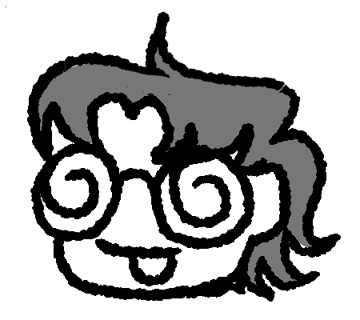

About Abacas
Hi! I'm Abacas. I'm an amatuer manga artist who's got a pretty ambitious project. I'm working on a manga called Medium Override. It follows Daisy Higgons through her transition, and many wacky adventures which bend time and space in ways it wasn't intended to.
Things I like to do include hanging out in voice chats, playing old minecraft, reverting my view of the web to the years between 2000-2013, and last but certainly not least, drawing! I love to dabble in many art mediums, most of which at least start out with 2D work, but I do dip my toes into making a 3D cardboard structure every now and then.
If you would like to see my art, you can either view a curated gallery on this website, or follow links to my more up-to-date page on social media. I can do commissions, but if you want to be satisfied with the result, I highly recommend you look at my other art. If I am to do a commission, I reserve the right to display the art work in a portfolio setting, and a rule for the actual art itself is that it cannot be NSFW. I can refuse to draw anything for any reason. Payment will be estimated based on the complexity of the request, and can only be through paypal or cashapp. If a commission from me still sounds good to you, then feel free to email me, there is a convenient little button for that at the top right everywhere on this site!
Lastly, thank you for looking at my site. I really appreciate you reading this, as it means the web is healing.